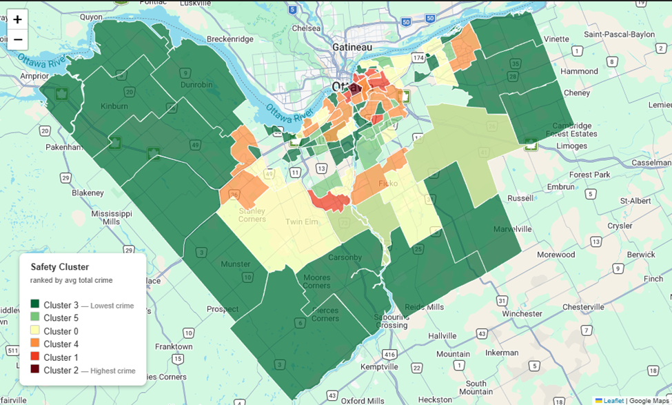

Mapping Ottawa Neighbourhoods into Six Distinct Safety Profiles
A K-Means analysis of 104 Ottawa neighbourhoods across 348,000 incidents (2018–2025) reveals a city split between quiet residential communities and a concentrated band of high-crime urban areas — with Centretown forming a statistical cluster of one.

Overview
Ottawa presents itself as one of Canada's most livable cities, but beneath that lies a pronounced safety divide. A machine learning analysis of eight years of police and crime data across 104 neighbourhoods reveals that where you live in Ottawa has a dramatic effect on your exposure to crime.
Centretown stands so far apart from every other neighbourhood that it forms a statistical cluster of one. Meanwhile, 42 rural and low-density areas see fewer than 1,000 incidents combined, and two downtown neighbourhoods account for a disproportionate share of the city's homicides and gun violence.
This report walks through five analyses, each building on the last, to map Ottawa's safety landscape from the city-wide down to the individual neighbourhood.
1. The City Divided — Safety Map
The map shades each neighbourhood on a six-step green-to-dark-maroon gradient representing its safety cluster, from lowest crime (deep green) to highest (dark maroon). The highest-risk clusters concentrate in the urban core — Centretown, Byward Market, Lowertown, and their immediate surroundings. The suburban ring sits in the mid-range yellows and oranges. The outermost rural areas are a uniform deep green.
Six distinct safety clusters were identified using K-means clustering across 19 crime dimensions. Ranked from safest to highest-crime:
| Rank | Cluster | Avg Crimes / Neighbourhood | Neighbourhoods | Population |
|---|---|---|---|---|
| 1 (Safest) | 3 | 804 | 42 | 173,332 |
| 2 | 5 | 1,950 | 14 | 135,838 |
| 3 | 0 | 2,152 | 22 | 225,217 |
| 4 | 4 | 5,847 | 18 | 275,440 |
| 5 | 1 | 11,785 | 7 | 73,755 |
| 6 (Highest) | 2 | 52,597 | 1 | 24,994 |
- The safest cluster (3) holds 42 neighbourhoods — the largest by count — but most are sparsely populated or non-residential areas (cemeteries, industrial zones). Genuinely quiet residential communities include Kinburn, Pierces Corners, and Sarsfield.
- Cluster 2 contains exactly one neighbourhood: Centretown. With 52,597 recorded incidents, it logged more crime than the bottom 42 neighbourhoods combined.
- Greenbelt neighbourhoods were excluded from the model as extreme outliers — their sparse population and land-use structure would create a distinct artificial cluster.
Analysis 2: What Kind of Crime? Composition by Cluster
Not all clusters are dangerous in the same way. The stacked bar chart breaks each cluster's total crime into three categories — violent, property, and other — sorted from safest to highest-crime cluster.

- Across every cluster, property crime is the dominant category, accounting for the majority of incidents citywide.
- The violent crime share rises noticeably in the highest-risk clusters. Clusters 1 and 2 carry the largest absolute violent crime burdens, while suburban and rural clusters show property crime shares approaching 70–80%.
- Centretown (Cluster 2) had 2,790 assaults and 22 shootings — its violent crime total alone would rank it among the top five neighbourhoods for overall volume.
- Cluster 1 (Byward Market, Lowertown, Overbrook-McArthur, New Barrhaven/Stonebridge, West Centretown, Ledbury-Heron Gate, Vanier North) recorded 46 homicides and 137 shootings across just 7 neighbourhoods and 73,755 residents.
- Cluster 4 (Sandy Hill, Glebe, Westboro, Elmvale, Hintonburg, Stittsville, Vanier South — 18 neighbourhoods, 275,440 residents) shows elevated property crime, driven by bike theft, mischief, and break-and-enter.
Analysis 3: Are Police Resources Allocated to Match Risk?
Each cluster is plotted on axes of total crime incidents per capita (x) vs. total Police Critical calls per capita (y). A dashed OLS trend line shows the expected relationship. Points above the line receive more critical-level police response than their crime rate predicts; points below receive less.

| Cluster | Description | Crimes Per Capita | Critical Calls Per Capita | vs. Trend |
|---|---|---|---|---|
| 3 | Rural / low-density | 2.6649 | 0.0482 | Below (under-serviced) |
| 5 | Low-mid suburban | 0.5349 | 0.0151 | Below (under-serviced) |
| 0 | Mid-suburban | 0.2304 | 0.0085 | Below (under-serviced) |
| 4 | Mixed urban / suburban | 0.6337 | 0.028 | Above (over-serviced) |
| 1 | High-crime urban core | 1.4799 | 0.0517 | Above (over-serviced) |
| 2 | Centretown | 2.1044 | 0.0527 | Above (over-serviced) |
- Cluster 2 (Centretown) sits at the top-right — highest crime per capita and highest critical call rate. Its position on the trend line suggests policing levels are proportionate to its outsized crime volume.
- Cluster 3's high per-capita crime is a statistical artefact — its 42 neighbourhoods include non-residential areas where a handful of incidents in a population of 200 inflate the ratio dramatically. The absolute crime count is tiny and rarely warrants a critical-priority response.
- Clusters 5 and 0 (Barrhaven, Hunt Club, Centrepointe) are genuine residential communities sitting slightly below the trend line — a meaningful signal of potential under-resourcing.
- Cluster 1 receives significantly more critical calls than the trend predicts. With 46 homicides and 137 shootings across just 73,755 residents, this elevated response reflects genuine severity of violence rather than misallocation.
Analysis 4: What Defines Each Cluster? — Crime Fingerprint
The z-score heatmap is the analytical core of this report. Rather than showing raw counts, it reveals which crime types are disproportionately prevalent in each cluster relative to the city-wide average. Each cell shows standard deviations above (red) or below (blue) the mean.

- Cluster 2 (Centretown) is saturated red across every column — above the city average on every single crime type, with the most extreme scores on Bike Theft, Assaults, and Mischief.
- Cluster 1 shows the most extreme z-scores on violent crime — Homicide, Shootings, and Assaults are all deeply red — while property crime is only moderately elevated. Its defining characteristic is concentrated, lethal violence in a small geographic area.
- Cluster 4 is strongly red on Bike Theft and Theft $5,000 and Under, with moderately elevated Break and Enter — neighbourhoods with low gun violence but high opportunistic property crime.
- Clusters 3 and 5 (rural and low-density outer suburbs) are uniformly blue across the board — below average on every crime type.
- Auto Theft spikes prominently in Cluster 1, driven by New Barrhaven/Stonebridge, which alone recorded 605 auto thefts — more than double any other neighbourhood. It also remains elevated across Cluster 4's suburban components.
Analysis 5: How Confident Are the Cluster Assignments?
The silhouette chart shows one bar per neighbourhood, grouped by cluster, sorted from lowest to highest silhouette score. Blue bars are well-assigned; red bars (score below zero) indicate a neighbourhood statistically closer to a neighbouring cluster than its own. The city-wide average silhouette score is 0.186 — a moderate fit indicating the six-cluster solution captures real structure, but some neighbourhoods genuinely sit on the boundary between safety profiles.

| Cluster | Avg Silhouette | Notes |
|---|---|---|
| 3 | 0.381 | Most internally consistent — rural / low-density areas well-separated |
| 1 | 0.144 | Moderate fit — high-crime urban neighbourhoods cluster tightly |
| 5 | 0.133 | Moderate fit |
| 0 | 0.096 | Wide spread of mid-suburban neighbourhoods |
| 2 | 0.0 | Centretown is so extreme it has no close peers |
| 4 | −0.092 | Worst cluster — many neighbourhoods sit closer to another cluster |
- Ottawa East (Cluster 4): −0.602 is the single most misclassified neighbourhood — its crime profile sits closer to Cluster 1's high-crime urban pattern than the broader Cluster 4 mix.
- Cluster 4's negative average silhouette is the most significant finding: seven of the ten most uncertain neighbourhood assignments belong to this cluster. It spans too wide a range — from dense inner-city Sandy Hill to suburban Stittsville — suggesting it may benefit from being split into two sub-groups in future model iterations.
- Other boundary cases include Rockcliffe–Manor Park (−0.312), Britannia Village (−0.254), and Civic Hospital–Central Park (−0.253).
Key Findings at a Glance
- Centretown is in a class of its own — 52,597 incidents, more than the bottom 42 neighbourhoods combined. It forms a statistical cluster of one.
- Seven neighbourhoods drive the city's violence — Cluster 1 (Byward Market, Lowertown, Overbrook-McArthur, New Barrhaven/Stonebridge, West Centretown, Ledbury-Heron Gate, Vanier North): 46 homicides, 137 shootings, 73,755 residents.
- Overbrook-McArthur has the most shootings — 28 gun incidents, the highest of any single neighbourhood, ahead of Byward Market and Ledbury-Heron Gate (27 each).
- Lowertown has the most homicides — 10 over the analysis period, followed by New Barrhaven/Stonebridge (8) and Vanier North (8).
- New Barrhaven/Stonebridge leads in auto theft — 605 stolen vehicles, more than double the next-highest neighbourhood.
- 42 neighbourhoods are in the safest cluster — genuinely low-crime residential communities include Kinburn, Stittsville, and Katimavik-Hazeldean.
- Police resourcing broadly tracks crime — suburban clusters 5 and 0 sit slightly below the trend; mixed Cluster 4 draws more police response than its crime rate alone predicts.
- Cluster 4 is the most uncertain grouping — avg silhouette of −0.092, with seven of the ten most boundary neighbourhoods. May warrant splitting in future models.
Data Notes
All data sourced from Ottawa Police Service open data and the Ottawa Neighbourhood Study (ONS). Datasets span 2018–2025 for most crime types; hate crime data extends to 2024 only (the most recent OPS release). Some minor neighbourhood boundary mismatches were resolved through fuzzy name matching and manual validation. Nine neighbourhoods with unresolvable boundary mismatches (primarily Greenbelt areas) were excluded from the analysis. Crime counts are totals across the full analysis period and are not annualised or population-adjusted in the raw figures (per-capita metrics appear where noted).
Explore the Project
Explore the live web app, read the full report on Medium, or browse the code on GitHub.